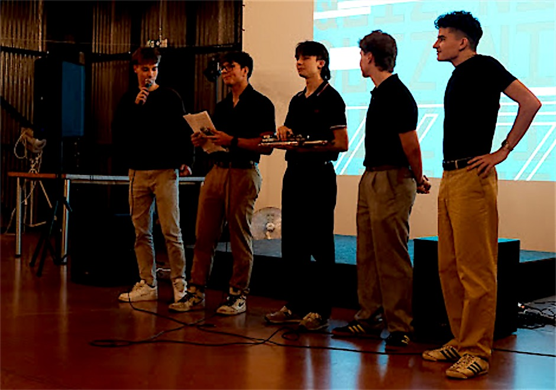

Featured project

- Guests
- 200+
- Team
- 5–10 people
- Editions
- 3led 2, mentored 1
- Role
- Founderthen mentor
GymParty
A school party I started from nothing, which became a tradition.
What I did
- Started it as chairman of the Student Parliament, to leave something lasting at my school
- Led a team of 5–10 people
- Planned the programme, the preparation and the prizes
- Negotiated the deal with the venue, including discounts for our guests
- Led the first two editions, then mentored the student who led the third